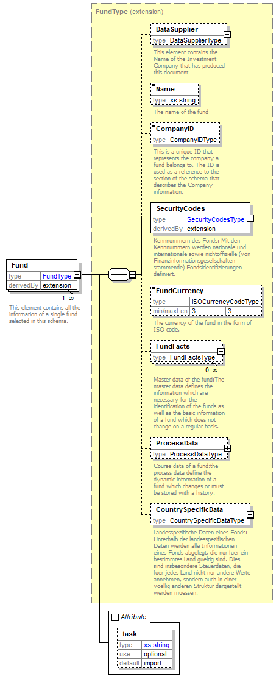
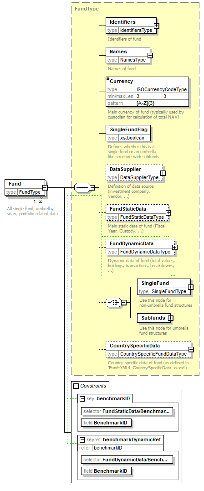
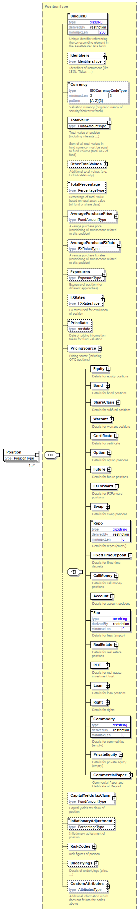

Fund Data
This part of the schema was complete rewritten from scratch.
Prior to FunsdXML4 it was very hard to distinguish between Fund and Shareclass data.
FundsXML4 has a clear separation on Fund level data (LEI) and Shareclasse level Data (ISIN) -
covering the AssetManager (Fund) view and the Investor (Shareclass) view.
FundsXML3
Node translation from FundsXML3 perspective:
| FundsXML3 Node | FundsXML4 Node | Description |
|---|---|---|
| DataSupplier | DataSupplier | Name of the Asset Manager who manges the fund. |
| Name | Names | Official Fund Name as written in the Prospectus |
| CompanyID | FundStaticData/Administrator FundStaticData/Custodian FundStaticData/InvestmentCompany |
Company Data |
| SecurityCodes | Identifiers | Identifiers of fund |
| FundCurrency | Currency | Main currency of fund (typically used by custodian for calculation of total NAV) |
| FundFacts | FundStaticData | Main static data of fund (Fiscal Year, Custody, …) |
| ProcessData | FundDynamicData | Dynamic data of fund (total values, holdings, transactions, breakdowns, …) |
| CountrySpecificData | CountrySpecificData | no difference |

FundsXML4
Node translation from FundsXML4 perspective:
| FundsXML4 Node | FundsXML3 Node | Description |
|---|---|---|
| Identifiers | SecurityCodes | Identifiers of fund |
| Names | Name | Name of the Asset Manager who manges the fund. Multiple names can be provided. One Name “OfficialName” is mandatory. |
| Currency | FundCurrency | Main currency of fund (typically used by custodian for calculation of total NAV) |
| SingleFundFlag | none | Indicates if the fund is an umbrella - otherwise set to “true”. Note: Funds with multiple shareclasses are also SingleFunds in term of FundsXML4. |
| DataSupplier | DataSupplier | Name of the Asset Manager who manges the fund. Note: if multiple Funds are transported within a single file, the DataSupplier in the ControlData node contains the name of the sender (e.g. Service Provider) and the DataSupplier of the Funds contains the name of the Fund Management Company. |
| FundStaticData | FundFacts | Main static data of fund (Fiscal Year, Custody, …) |
| FundDynamicData | ProcessData | Dynamic data of fund (total values, holdings, transactions, breakdowns, …) |
| SingleFund / Subfunds | none | This is a choice element. That means that either the Node “SingleFund” OR “Subfunds” can be delivered. |
| CountrySpecificData | CountrySpecificData | no difference |

Identifiers (4) / SecurityCodes (3)
On Fund level a LEI or - if no LEI is available - an internal Fund Code has to be provided.
If an internal Fund Code is used, it must not change in future deliveries.
|
|
FundStaticData (4) / FundFacts (3)
This node contains all Fund Static Data like:
- Inception Date
- Legal Structure (AIF, …)
- Fund Administrator
- Publication Texts (Investement Strategie, Risk Description, etc.)
- Benchmark Information (Custom Benchmark, Market Index, Blended Benchmark, Benchmark composition, Index Constituents, etc.)
Unlike in FundsXML3 there is no “ShareClassSecurityType”, “MainShareClass”, “EarningUse”, etc. This information can be found in the corresponding ShareClass nodes.
FundDynamicData (4) / ProcessData (3)
This node contains all dynamic data (“data that change on a regular basis - e.g. daily”).
The main differences are:
- Fund Volume must be transported in TotalAssetValues/TotalAssetValue node. Note: this is not the Shareclass Volume.
- Different Fund Volume types “OFFICIAL”, “ESTIMATED” and “TECHNICAL” can be transported.
- Holdings are not split into Assets, Fees and Accounts. In FundsXML4 all holdings are transported in the Portfolios/Portfolio/Positions/Position node.
- Different Risk figures can be transported (on Fund Level, Shareclass Level and Asset Level).
- Positions do have a mandatory UniqueID. This ID must also appear in the AssetMasterData node. Otherwise, the Schema Validation will fail.
Positions (4)
Positions (former Assets + Fees + Accounts) must have a UniqueID. This ID must reflect exactly one UniqueID in the AssetMasterData.
The TotalValue contains the valuation (including accrued interests) of the instrument and can be provided in different currencies. The TotalValue must be provided at least in Funds Currency and Asset Currency.
|
|
In FundsXML3 only one level of Assets exists. This leads to fields that have a multiple meaning (depending on the asset class). E.g. the field “NominalOrUnit” that was filled different depending on the corresponding asset class.
